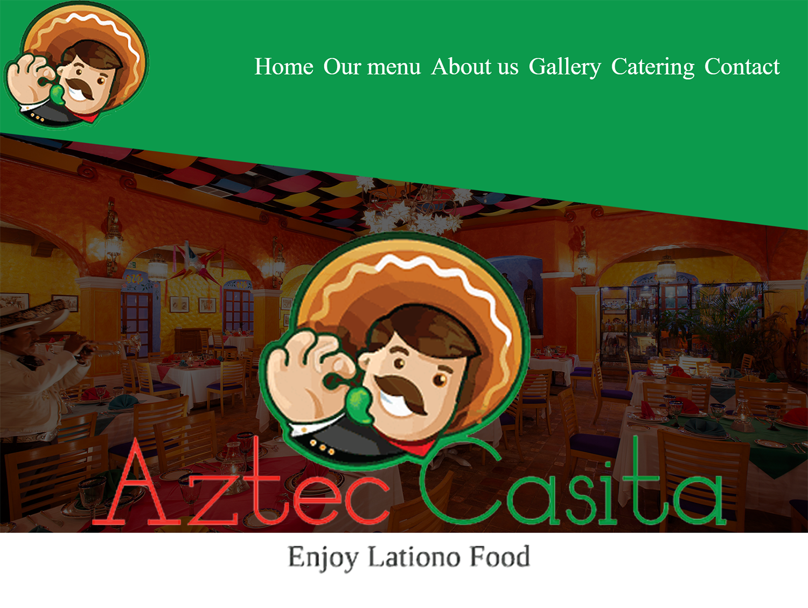

KIKA kappers - Koudekerk aan den Rijn
Na mijn eerste schooljaar kreeg ik al een echte opdracht. De eigenaren van KIKA kappers hadden behoefte aan een mooie en duidelijke website. Daar kwam meer bij kijken dan ik dacht. Gedurende de zomervakantie heb ik een design gemaakt, de salon gefotografeerd, teksten geschreven en een responsive website ontwikkeld die ook goed werkt op een telefoon. We zijn trots op het eindresultaat: kikakappers.nl.
Schoolproject - Banketbakker website
Banketbakker Klaas was één van de eerste websites die ik op school maakte. Deze website heb ik zelf ontworpen en geprogrammeerd aan de hand van een schoolopdracht. Deze website is wel responsive, maar niet geoptimaliseerd voor mobile.

Photoshop opdracht
Naast programmeren heb ik op school leren werken met Photoshop. Dit is het resultaat van een examenopdracht waarbij ik meerdere afbeeldingen moest samenvoegen en filters moest toepassen. Het leren werken met Photoshop is me goed van pas gekomen bij het ontwerpen van websites.
Python pong game
Buiten de schoolopdrachten om heb ik me verdiept in Python en een eenvoudige Python game gemaakt.
JavaScript Flappybird game
Aan de hand van een schoolopdracht heb ik een eenvoudige flappy bird game gemaakt met JavaScript. Op dezelfde manier heb ik ook een game gemaakt genaamd 'Blockchase' waarbij je de pijltjestoetsen gebruikt om zo lang mogelijk een blokje te ontwijken dat je achtervolgt.
Schoolproject - Website voor kapperszaak
Deze website heb ik samen met een klasgenoot ontworpen en gemaakt voor een schoolopdracht. Deze website is wel responsive, maar niet geoptimaliseerd voor mobile.
Schoolproject - Android app
Voor deze opdracht moesten we een app maken voor Nederlandse kinderen die de taal Amazigh willen leren. Deze app is gemaakt met Android studio en Java.
Schoolproject - Restaurant website
Designtechnisch laat deze website veel te wensen over. Dit kwam deels door het lastige logo dat ik van school aangeleverd kreeg. Toch heb ik veel geleerd tijdens het maken van deze website. Dit was namelijk de eerste website die ik heb geoptimaliseerd voor mobile. In dit geval door middel van een hamburgermenu. Ook was het een uitdaging om deze layout te realiseren.
JavaScript klok
Dit was een schoolopdracht: Een digitale klok, een klok op Amsterdamse tijd en een klok die de tijd aangeeft in New York City.